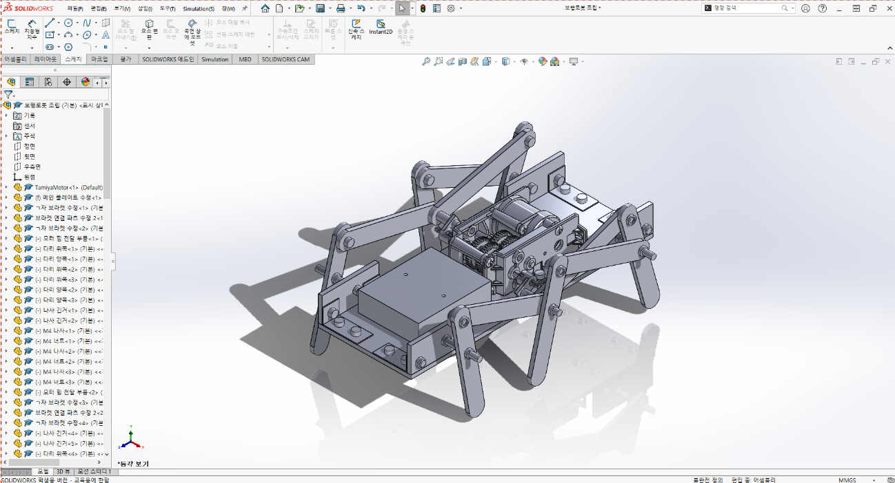
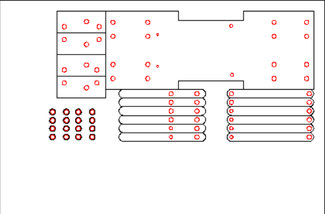
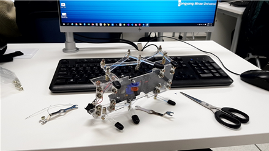
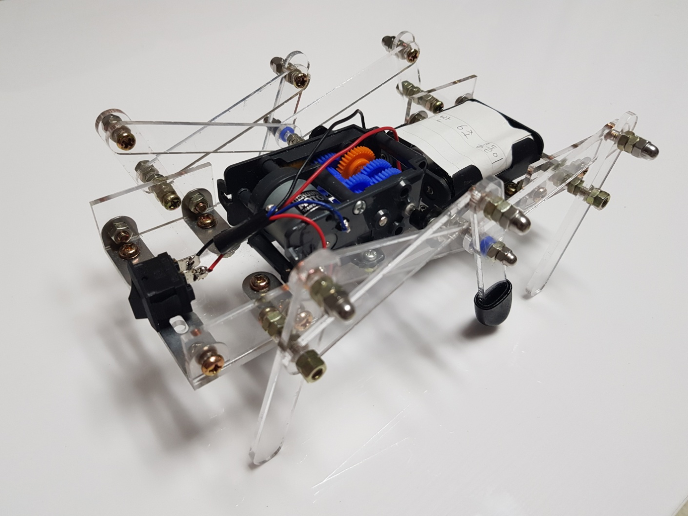
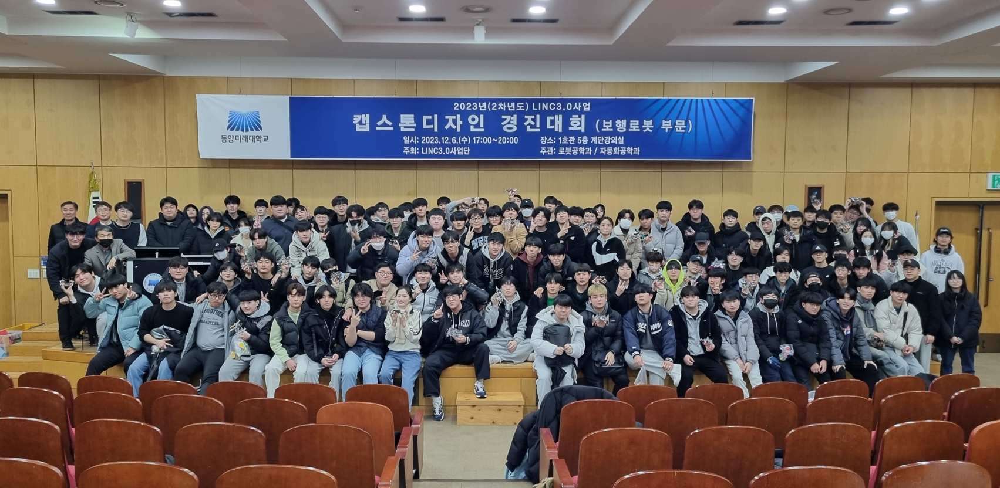

My History
창의적 공학설계 캡스톤 디자인 보행로봇 경진대회
6족 보행로봇 설계 프로젝트

STEP
01
3D 기구 설계
SolidWorks를 활용해 6족 보행 메커니즘과 기구부를 정밀 설계했습니다.

STEP
02
레이저 커팅 가공
설계를 바탕으로 CAD 프로그램을 사용해 도면을 작성하고 레이저 가공으로 실제 부품을 만들어냈습니다.

STEP
03
프레임 및 링크 조립
가공한 링크들과 모터, 기어박스 등을 체결하여 실제 로봇을 조립했습니다.

STEP
04
최종 완성 및 테스트
전원 연결 및 반복적인 보행 작동 테스트를 거쳐 빠르고 안정적인 6족 보행로봇을 완성했습니다.
STEP
05
대회 본선
경진대회 현장에서 최종 점검을 마치고, 실전 대회에서 완성된 보행 로봇을 성공적으로 시연했습니다.


최종 순위 : 3위
